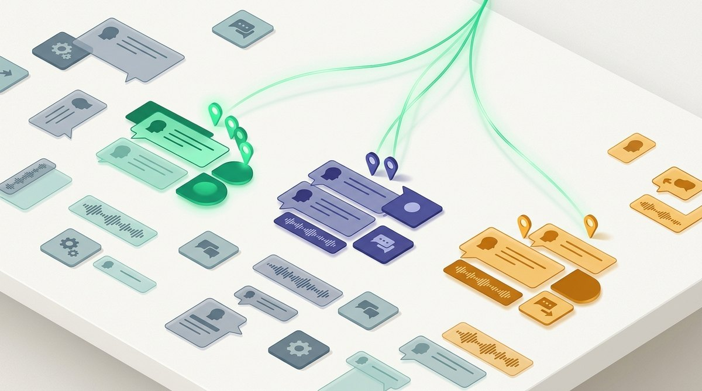

Turn raw customer interviews, support tickets, and session telemetry into evidence-backed PRDs, assumption maps, and clickable prototypes in hours—without hallucinated insights or AI slop.
[SRC-ID] quotes, participant counts, and disconfirming counter-evidence before writing a single requirement.Generative AI makes it effortless to produce a 10-page PRD and a glossy UI in five minutes—which is exactly why teams ship more AI slop than ever. High-performing product teams use AI to compress synthesis and prototyping cycle time from weeks to hours while keeping human judgment and verbatim customer proof in the driver’s seat.
Every stage produces a concrete, verifiable artifact that constrains the next stage. Skipping Stage 2 produces invented problems; skipping Stage 5 ships polished UI that fails real workflows.
Cross-transcript quote extraction, support ticket tagging, edge-case enumeration, PRD structure scaffolding, realistic mock JSON generation, and turning approved specs into clickable browser prototypes for rapid testing.
Selecting which customer problem matters strategically, defining sharp Non-Goals, watching real users hesitate during live prototype tests, and making final Kill / Pivot / Build calls with engineering.
Modern discovery is no longer a single monolithic platform. High-velocity teams pair four specialized layers—Capture, Repository, Synthesis & PRD, and Rapid Prototyping—so evidence flows cleanly from voice call to clickable UI without vendor lock-in.
| Layer | Leading Tools (Nov 2026) | Core Superpower | When to Choose & Watch-Outs |
|---|---|---|---|
| 1. Transcript & Signal Capture | Granola, Gong, Loom, Intercom / Zendesk CSV | Botless meeting notes that merge your live jottings with transcript context; zero awkward “recording bot” in calls. | Use Granola for fast PM discovery calls (note: it deletes raw audio post-transcription). Use Dovetail/Loom when video clips are needed. |
| 2. Evidence Repository | Dovetail AI, Productboard, Notion AI | Persistent customer context layer with auto-tagging, highlight reels, MCP server hooks, and enterprise signal agents. | Choose Dovetail AI for multi-quarter research orgs. Small startups can start with a structured Notion database + CSV exports. |
| 3. Grounded Synthesis | NotebookLM (Gemini Notebook), Claude Projects, ChatGPT Projects | Source-locked RAG synthesis with inline clickable citations (NotebookLM) or persistent custom taxonomy prompts (Projects). | Use NotebookLM when zero-hallucination citation lookup is paramount. Use Claude Projects for deep cross-document PRD reasoning. |
| 4. PRD Drafting & Coaching | ChatPRD, Claude Projects, Linear Docs | Purpose-built PRD templates, automated stakeholder critique, acceptance criteria, and direct integrations to v0 & Linear. | Pick ChatPRD to standardize PRD quality across a PM team. Always inject your own evidence pack—never draft from thin air. |
| 5. Rapid Prototyping Studios | Figma Make, Claude Design, v0.app, Gemini Canvas | Turns PRDs, sketches, or existing design libraries into clickable, stateful web/mobile prototypes in minutes. | Match tool to handoff: Figma Make for design-system teams, Claude Design for codebase-aware prototypes, v0.app for React/Git PRs. |
Primary Pick: Figma Make (inside Figma) or Claude Design (Anthropic Labs, Apr 2026).
Primary Pick: v0.app (Vercel) or Gemini Canvas (Google).
Whether you assemble this workspace in Dovetail + ChatPRD or NotebookLM + Claude Design, every trustworthy AI discovery environment exposes the same 7 control surfaces to prevent hallucination and keep prototypes anchored to real user proof.
[P04 12:41][P11 08:15]N=1 → move to Non-Goals).[PostHog Q3]; 9/14 users cite opaque row errors [P04, P09, ZD-412].
1 Source Scope Lock: Restricts the model strictly to uploaded transcripts, tickets, and analytics exports—blocking general web knowledge from inventing fake user needs.
2 PII Scrubber Toggle: Replaces customer names, emails, and company domains with pseudonyms (P01–P14, [ACME_CO]) before any prompt leaves your workspace.
3 Quote-Anchored Clusters: Every theme must display frequency (9/14 calls) plus verbatim, timestamped quotes so stakeholders can audit claims in 3 seconds.
4 Contradiction & Outlier Radar: Actively hunts for disconfirming quotes and sample blind spots so the LLM doesn’t average away dissenting enterprise or edge-case users.
5 5-Part PRD Composer: Links each requirement directly to its upstream cluster ID and enforces an Explicit Non-Goals block to stop scope creep.
6 Assumption Risk Map: Extracts the 2–3 riskiest leap-of-faith beliefs embedded in the PRD and assigns each a concrete validation method before engineering starts.
7 One-Click Prototype Handoff: Packages flows, edge states, and realistic mock JSON into a clean prompt bundle for Figma Make, v0.app, Claude Design, or Gemini Canvas.
LLMs are natural smoothers: when asked to “summarize 15 interviews,” they blend weak anecdotes into confident-sounding consensus. Enforce the 3-Pass Quote-Anchored Protocol so every insight survives executive scrutiny.

Run one transcript or ticket batch at a time. Extract exact verbatim quotes tagged with [P-ID | timestamp | segment]. Ban paraphrasing inside quotation marks.
Group atomic quotes into themes and require unique participant count (n/N), not total mention count (so one vocal customer doesn’t skew the roadmap).
Run a dedicated counter-evidence pass: ask the AI to list every quote that contradicts the top 3 themes and flag any claim backed by fewer than 3 independent users.
≥ 3 distinct participants or ≥ 15 support tickets independently describe it.[N=1 Hypothesis]—useful for ideation, never proof of market demand.Ctrl+F in your source transcript or click NotebookLM’s inline footnote to verify exact wording before sharing.SYSTEM GUARDRAIL — STRICT EVIDENCE MODE
1. Use ONLY the attached transcripts/tickets.
2. Every theme MUST include:
- Unique count: [n/N participants]
- 2–3 exact verbatim quotes with [ID|time]
- Severity: Blocker | Friction | Nice-to-have
3. NEVER invent quotes, merge speakers, or
extrapolate percentages not in the text.
4. Add a mandatory "Disconfirming Evidence &
Gaps" section listing counter-examples.
5. If evidence is insufficient, output:
[INSUFFICIENT DATA — RECRUIT MORE USERS].Engineers ignore 12-page wall-of-text PRDs, and prototyping tools choke on vague prose. Compress every feature spec into a 2-page, 5-part structure where every section maps directly to either customer proof, scope boundaries, or clickable UI states.
[1. Problem + Evidence] 41% of self-serve trials abandon onboarding during CSV import (PostHog Q3 funnel). In 9/14 interviews and 34 Zendesk tickets, users hit generic “Import Failed” banners without seeing which rows broke: “I spent 40 minutes guessing which date column failed” [P04 12:41]. [2. Non-Goals] Out of scope for v1: automated SFTP/API syncs, multi-sheet .xlsx macro parsing, and custom regex transform scripts (defer to Q1 Enterprise). [3. Flows & Edge Cases] Upload → Auto-map header preview (confidence badges) → Inline error drawer filtering only invalid rows → 1-click “Fix DD/MM dates” + “Import 982 valid rows & download 18 error rows.” Edge states: >50k row limit warning, empty header row, duplicate email conflict. [4. Metrics & Guardrail] Primary: raise first-session CSV completion from 59% → 80% within 30 days. Guardrail: <0.5% post-import rollback or support escalation rate. [5. Prototype Scope] Build 3 interactive states (Mapping Table, Error Filter Drawer, Partial Commit Modal) using 12 realistic anonymized CRM rows; test 3 recovery tasks with 5 trial ops managers in 24h.
| PRD Section | What Must Be Inside | AI Slop Trap It Prevents |
|---|---|---|
| 1. Problem + Proof | Quantified funnel/ticket baseline + 2–3 verbatim [SRC-ID] quotes + target persona. |
Prevents “solution-in-search-of-a-problem” PRDs invented from LLM generic assumptions. |
| 2. Explicit Non-Goals | 3–5 concrete features you are deliberately excluding from v1 (with brief rationale). | Stops prototyping AIs (v0 / Figma Make) and engineers from building unrequested settings panels. |
| 3. Flows & Edge Cases | Step-by-step happy path + empty, loading, permission, partial-failure, and undo states. | Eliminates “happy-path-only” specs that trigger 15 Slack questions during sprint planning. |
| 4. Metrics & Guardrails | 1 primary behavior metric (with baseline → target) + 1 counter-metric guardrail. | Stops vanity metrics (“increase engagement”) and prevents shipping fast-but-broken shortcuts. |
| 5. Prototype Scope | Exact screens to mock, realistic mock dataset, and 3 user-test tasks to validate assumptions. | Turns the PRD directly into a machine-readable brief for rapid clickable prototyping. |
Static wireframes hide interaction friction. By feeding Sections 2, 3, and 5 of your PRD into a 2026 AI prototyping studio, you can put a stateful, clickable UI with realistic data in front of users within 24 hours—before writing production backend code.
| Studio | Best Input Modality | Output & Fidelity | Ideal Discovery Use Case |
|---|---|---|---|
| Figma Make | Existing Figma frames, design library tokens + PRD prompt | Interactive web/mobile prototype inside Figma; publishable test URL | Extending an established product UI while staying 100% on-brand with your design system. |
| Claude Design | PRD + repo/codebase context or brand style guide | Code-powered prototypes, decks & one-pagers; handoff to Claude Code | Zero-to-one product flows, interactive data visualizations, and PM-to-eng code handoffs. |
| v0.app (Vercel) | Structured PRD + GitHub repo import + shadcn/ui | Full-stack sandbox runtime with Git branches & instant preview URLs | SaaS dashboards, tables, multi-step forms, and teams shipping Next.js/React PRs directly. |
| Gemini Canvas | Whiteboard sketch photo, NotebookLM brief, or PRD text | Live editable HTML/React preview shareable via link or Google Sites | Ultra-fast workshop ideation, sketch-to-app validation, and stakeholder alignment demos. |
Paste 10–15 anonymized rows from real customer workflows (messy names, long SKUs, broken dates). Real data immediately exposes truncation bugs and cognitive overload that dummy text hides.
Don’t generate an entire app. Build only the 2–3 screens tied to your riskiest assumption, plus one explicit error/empty state so users experience recovery—not just the happy path.
Early concept test? Keep styling clean and neutral so users critique the workflow, not button colors. Pre-launch usability test? Match production tokens in Figma Make or Claude Design.
Include a tiny corner toggle (Happy Path | Error State | Empty State) in the prototype so moderators can jump straight to edge cases during 15-minute user tests.
Build a clickable interactive prototype for [FEATURE NAME] using clean, accessible UI.
CONTEXT: Follow ONLY these PRD Flows & Edge Cases: [PASTE SECTION 3].
STRICT NON-GOALS: Do NOT add navigation tabs, auth screens, or settings for: [PASTE SECTION 2].
REALISTIC MOCK DATA: Pre-populate the table with these 10 anonymized records: [PASTE JSON/CSV].
INTERACTIVITY: All filters, inline error fixes, and confirmation modals must update client state.
TESTING HUD: Add a subtle bottom-right "Demo State" switcher: [Default | 18 Row Errors | Empty].In 2026, AI-generated “synthetic users” can simulate a usability walkthrough in 90 seconds—yet industry benchmarks show over 90% of researchers refuse to trust synthetic participants alone for product decisions. Use synthetic pre-tests as a fast spellchecker, then validate every high-stakes bet with real humans.
| Validation Dimension | Where Synthetic Pre-Tests Shine | Where Real Humans Are Mandatory |
|---|---|---|
| Copy & IA Clarity | Spot jargon, confusing button labels, and broken form hierarchy before burning real participant slots. | Confirming domain-specific mental models and industry terminology nuances. |
| Interview Script Rehearsal | Dry-run your 15-minute test guide to catch leading questions and awkward task transitions. | Uncovering unprompted workarounds, emotional frustration, and messy real-world context. |
| Go / No-Go & Pricing | Do NOT use. LLMs suffer from sycophancy (“over-validation”) and artificially polite enthusiasm. | Measuring true willingness-to-pay, switching friction, and actual task abandonment. |
| Edge & Diverse Segments | High bias risk. Persona prompts flatten variance and stereotype underrepresented populations. | Recruiting diverse roles, accessibility needs, and regional workflows directly. |
Pass, Pass w/ Friction, or Fail per task.If you run a synthetic pre-test on a prototype screenshot or PRD, never ask “Would you use this?” Instead, ground the prompt in your real customer transcripts and force adversarial critique:
“List the top 5 reasons a busy Ops Manager would abandon this screen in under 20 seconds. Label output [SYNTHETIC PRE-TEST].”
Drop these five battle-tested blueprints into NotebookLM, Claude Projects, ChatPRD, or v0.app / Figma Make. Each recipe enforces strict input grounding and structured output so you get usable artifacts on the first run.
| # | Recipe Name | Best Tool | Expected Output Artifact |
|---|---|---|---|
| R1 | Cross-Transcript Synthesizer | NotebookLM / Claude | Frequency-ranked pain themes + verbatim [P-ID] quotes + disconfirming outliers |
| R2 | Ticket & NPS Pain Quantifier | Claude / ChatGPT Projects | Root-cause taxonomy table with ticket volume, revenue tier, and churn risk score |
| R3 | 5-Part Evidence PRD Builder | ChatPRD / Claude Projects | 2-page spec linking verbatim proof, strict Non-Goals, edge states, and metrics |
| R4 | Riskiest Assumption Mapper | Claude / ChatGPT | Desirability / Usability / Feasibility risk matrix + 24-hour test script |
| R5 | Prototype Spec + Mock JSON | Figma Make / v0 / Claude Design | Stateful clickable UI with realistic anonymized records and error-state switcher |
Analyze ONLY the attached [N] redacted transcripts.
Output a Markdown table with: Theme | Unique Users
(n/N) | Severity | 2 Verbatim Quotes [P-ID|time].
Rules: No paraphrasing inside quotes. Exclude themes
with n<3 into a separate "N=1 Hypotheses" list.
End with "Contradictions & Sample Blind Spots."Given this redacted CSV of [N] Zendesk tickets and
NPS comments, cluster by underlying workflow failure
(not feature requests). Return top 6 failure modes:
Failure | Ticket Count | % of Total | Top Segment |
3 Verbatim Ticket IDs | Current User Workaround.Draft a strict 2-page PRD from the attached Synthesis
Pack using ONLY these 5 sections:
1. Problem + Verbatim Evidence (cite [P-ID] & KPIs)
2. Explicit Non-Goals (list 4 things excluded in v1)
3. User Flows & Edge Cases (empty/error/loading/undo)
4. Success Metric (baseline->target) + 1 Guardrail
5. Prototype Scope (3 screens + 3 user test tasks).
Flag any unverified assumption with [ASSUMPTION].Read this 5-Part PRD. Imagine this feature launched
and failed to move the primary metric by 60 days.
1. List the 5 most likely failure causes.
2. Convert each into a testable assumption tagged:
[Desirability | Usability | Feasibility | Trust].
3. Rank by (Impact x Uncertainty) and write a
15-minute clickable prototype test script for #1.Generate an interactive prototype for PRD Section 5.
Use clean SaaS styling (high contrast, 8px grid).
Include 10 realistic anonymized domain rows (with 3
intentional validation errors to test recovery).
Add a compact corner toggle: [Happy | Error | Empty].
Do NOT build screens listed in PRD Non-Goals.Customer interviews contain names, emails, revenue figures, and confidential workflows. Uploading raw transcripts into consumer AI tools violates enterprise trust, GDPR/CCPA obligations, and customer NDAs. Build a zero-leakage research hygiene protocol in 5 minutes.
P01–P15 and companies for tier tags ([ENT-FINTECH-04]). Keep an offline mapping sheet only in restricted Drive/Notion.# Quick Python/CLI redaction pass for exported .txt/.csv transcripts before LLM synthesis
import re, pathlib
text = pathlib.Path("raw_tickets.csv").read_text()
text = re.sub(r'[\w.+-]+@[\w-]+\.[\w.-]+', '[REDACTED_EMAIL]', text)
text = re.sub(r'\b(?:\+?1[-.\s]?)?\(?\d{3}\)?[-.\s]?\d{3}[-.\s]?\d{4}\b', '[REDACTED_PHONE]', text)
text = re.sub(r'\b(?:acct|cus|org)_[A-Za-z0-9]{6,}\b', '[REDACTED_ACCT_ID]', text)
pathlib.Path("clean_tickets_for_ai.csv").write_text(text)| Ethical / Bias Risk | How It Sneaks Into AI Discovery | Mandatory Team Safeguard |
|---|---|---|
| Leading Prompts | Asking “Find quotes proving users want AI chat” causes the LLM to cherry-pick weak mentions. | Ask neutral, problem-first prompts: “What blocked users from completing X? Include counter-examples.” |
| Synthetic Laundering | Dropping AI-persona feedback into exec decks disguised as real customer research. | Enforce mandatory provenance badges on every slide: [HUMAN n=12] vs. [SYNTHETIC PRE-TEST]. |
| Recency & Volume Skew | One loud 60-minute call generates 40% of transcript tokens and dominates AI summaries. | Weight clusters strictly by unique accounts affected, never raw mention count. |
The highest leverage comes from connecting your tools into a repeatable under-12-hour discovery assembly line—so insights never rot in a transcript folder and engineers receive a validated spec paired with a clickable reference prototype.
| Transition | Owner | Time Box | Exact Artifact Contract (No Missing Context) |
|---|---|---|---|
| Capture → Synthesis | PM / UXR | 45 min | Export redacted Granola/Dovetail notes as Markdown + support ticket CSV into a dedicated NotebookLM notebook or Claude Project. |
| Synthesis → PRD | PM | 90 min | Promote only n ≥ 3 verified themes into the 5-Part PRD in Notion/ChatPRD; attach verbatim quote table and adversarial critique fixes. |
| PRD → Prototype | Designer / PM | 60 min | Feed PRD Sections 2, 3 & 5 + anonymized mock JSON into Figma Make, Claude Design, or v0.app; wire up Happy, Error, and Empty states. |
| Test → Linear Spec | PM + Eng Lead | 2 hours | After 5-user validation, sync final UI changes back into PRD, then auto-generate Linear issues with Given/When/Then acceptance criteria + prototype link. |
In late 2026, Dovetail, Notion, Figma, and Linear all expose MCP servers. Connect them to Claude or your coding agent so engineering can query the exact user quote behind any Linear ticket without hunting through Google Drive.
Prototyping always reveals new edge cases. Before kicking off sprint planning, run a 5-minute Diff Sync: paste your final prototype flow back into ChatPRD/Claude to update Section 3 so the PRD stays the single source of truth.
When AI discovery outputs feel generic, bloated, or disconnected from real users, diagnose the failure mode below and apply the instant fix before committing engineering hours.
| Failure Symptom | Root Cause | Instant Fix |
|---|---|---|
| 1. Fabricated or Blended Quotes | Summarized 15 transcripts in one prompt without citation constraints. | Switch to NotebookLM or 2-pass extraction; require exact [P-ID|time] tags and spot-check 20% via Ctrl+F. |
| 2. Bloated 12-Page “AI Slop” PRD | Prompted from a vague idea with no length cap or Non-Goals block. | Enforce the 2-page 5-Part Formula (p. 6); delete any paragraph lacking a citation, flow state, or metric. |
| 3. Generic, Off-Brand Prototype UI | Generated UI without design tokens or real domain data. | Use Figma Make (existing library) or Claude Design (codebase tokens) + paste 10 anonymized real customer records. |
| 4. Overly Enthusiastic Synthetic Feedback | Asked AI personas leading validation questions (“Do you like this?”). | Switch to adversarial failure prompts; never use synthetic scores for go/no-go—run a 5-user real test. |
| 5. Engineers Blocked by Missing Edge Cases | Prototype and PRD only covered the ideal happy path. | Run the “Staff Engineer Review” prompt (p. 6) and require Empty, Loading, Error, and Permission states in Section 3. |
| 6. Execs Mistake Prototype for Shipped Code | High-fidelity v0/Figma Make demo looked production-ready. | Add a top amber banner (PROTOTYPE • MOCK DATA ONLY) and state backend effort explicitly during demos. |
| 7. Customer PII Leaked Into Shared Project | Uploaded raw Zendesk CSV or unredacted Gong transcripts. | Delete the source immediately, run the 10-second regex scrubber (p. 10), and verify Enterprise ZDR settings. |
≥ 3 independent users or quantified ticket/funnel data, with 20% of quotes spot-checked.P01..PN) and processed under Zero-Data-Retention plans.